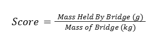
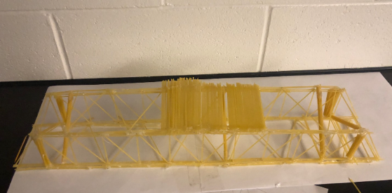

You can only use 250g of spaghettis and 5 glue sticks. Your score is calculated by Mass Held By Bridge
(g)/Mass of Bridge (kg). Your Bridge can only be 10cm in width, 60cm in lenght, and 25cm in height.

Objective is to make a spaghetti bridge that can hold as much weight as it could possibly hold.
Bridge #1
↓ Here is the scale model of our bridge #1
The first bridge we built was a truss bridge, it contained 5 sections with triangles facing outwards on
both sides. Each sections is 5cm long in length. In total the bridge is 60cm long and the top is 50cm
long, with a heigth of roughly 7cm and a width of 10cm. The total weight of our bridge is 150g. Our
bridge held 4 pounds because the end of our bridge snaped which lead to us getting 12.1 points.
↓ What bridge #1 look like

Problems on our first bridge
The problem with our bridge is that one of the end wasn't as strong as we expected, so it broke due to the
force.
Bridge #2
↓ Scale model of bridge #2
Our 2nd bridge is a beam like truss bridge a with a length of 58cm it is around 10cm tall and 10cm wide,
with a weigth of 210g. It has two levels to promote stability and all of the squares are crossbraced with
triangles. Again this bridge is a truss bridge because we found that these bridges are quite succesful. With
our previous problems on bridge #1 we decided to thicken up all the compressions 2x the tesions part. So the
compression part have 4 strands spaghettis while the tension part have 2 strands of spaghettis.
↓ What brige #2 look like
Promblems on our second bridge
With our second bridge we faced a simliler problems with our first bridge. The end of the bridge was weaker
then we expected again. Which lead us getting 37.1points lifting 7.6kg.